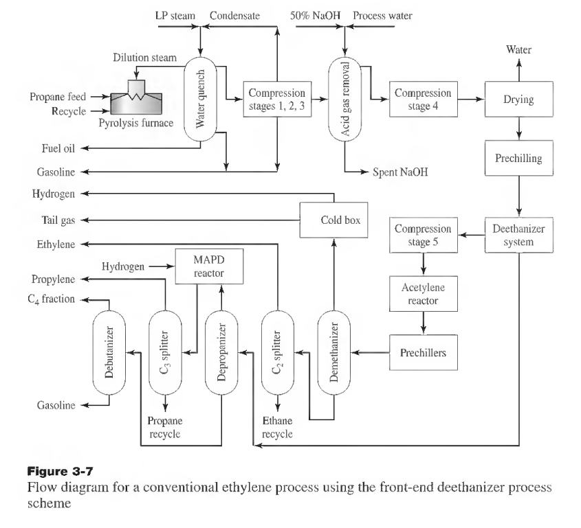
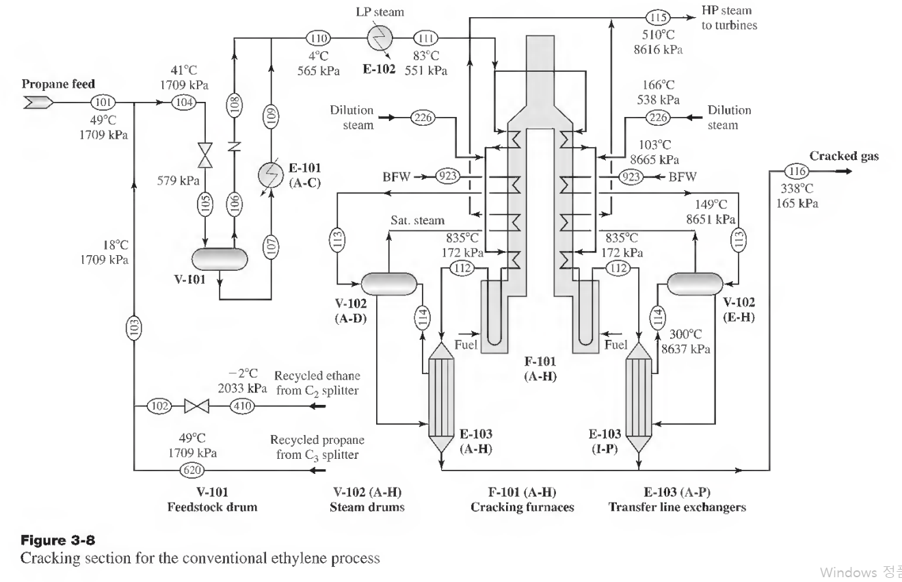

ch3 : 공정 설계 개발
공정설계는 화학공학자에게 공학 직업상 누릴 수 있는 최고의 창조 활동을 제공한다.
공정 설계에 있어서 화학공학자는 새롭거나 개조된 공정도를 만들어내는 도전에 직면한다. 의심할 바 없이 공정설계는 일사천리거나 틀에 박힌 작업이 아니다. 더 수익성 있고 더 잘 제어되며 조업상 안전하고 환경적으로 건전한 완전히 새로운 공정에 대한 혁신적 접근이나 기존 공정에 대한 개조를 가져온다.
이 장에서는 앞서 표1-1에서 개요를 보인 화학 및 생물화학 공정의 설계와 개조에 적용될 몇 가지 주요단계를 더 상세히 검토할 것이다.(이 표 1-1은 밑에 참고로 해놓겠음). 많은 이런 단계들은 기본 공정설계 개발과 함께 요약되어 강조될 것이다. 설계에서는 공정설계와 경제적 고려사항에 관련된 화학산업에서 자주 부딪치는 실제적 형태의 문제를 검토한다.
참고: 공정 설계의 과정
| Table 1-1 Typical design steps for chemical and biochemical processes 1. Recognize a societal or engineering need. a. Make a market analysis if a new product will result. 2. Create one or more potential solutions to meet this need. a. Make a literature survey and patent search. b. Identify the preliminary data required. 3. Undertake preliminary process synthesis of these solutions. a. Determine reactions, separations, and possible operating conditions.(공정도 만들라는 얘기) b. Recognize environmental, safety, and health concerns. (공정도의 안전성, 규제 평가) 4. Assess profitability of preliminary process or processes (if negative, reject process and create new alternatives). 5. Refine required design data. (데이터 수집) a. Establish property data with appropriate software. b. Verify experimentally, if necessary, key unknowns in the process. 6. Prepare detailed engineering design. (공정도 제대로) a. Develop base case (if economic comparison is required). b. Prepare process flwsheet. c. Integrate and optimize process. d. Check process controllability. e. Size equipment. /. Estimate capital cost. 7. Reassess the economic viability of process (if negative, either modify process or investigate other process alternatives). 수익성 재평가 8. Review the process again for environmental, safety, and health effects. 9. Provide a written process design report. (리포트 작성) 10. Complete the final engineering design. a. Determine equipment layout and specifications. b. Develop piping and instrumentation diagrams. c. Prepare bids for the equipment or the process plant. 11. Procure equipment (if work is done in-house). 12. Provide assistance (ifrequested) in the construction phase. 13. Assist with start-up and shakedown runs. 14. Initiate production. |
앞에 보인 공정의 설계와 개조에 적용될 몇 가지 주요 단계를 더 상세히 검토해보자.
설계 데이터베이스 개발
설계 사업의 개발은 needs를 충족시키기 위한 여러개의 해를 찾으면서 시작된다.
1. 문헌조사: chemical abstracts, engneering index, science citation index 등.
또한 화학공학 원리, 설계, 비용, 응용의 모든 측면에 대한 정보의 주요 자료는 perry's chemical engineer's handbook이다.
Perry's Chemical Engineers' Handbook (1997).
Handbook of Chemistry and Physics (published annually by CRC Press), Chemical Processing Handbook (1993),
Unit Operations Handbook (1993),
Riegel's Handbook ofIndustrial Chemistry (1992), JANAF Thermochemical Tables (1985), Handbook of Reactive Chemical Hazards (1990), Standard Handbook of Hazardous Waste Treatment and Disposed (1989), and Data for Process Design and Engineering Practice (1995).
Several literature resources are widely used by design engineers. These include the SRI (Stanford Research Institute) Design Reports, which provide detailed documentation of many chemical processes.
Kirk-Othmer Encyclopedia of Chemical Technology (1994), Ullman's Encyclopedia ofIndustrial Chemistry (1988), and Encyclopedia ofChemical Processing and Design (1976). Other encyclopedias that may provide additional information in this creative task include the McGraw-Hill Encyclopedia ofScience and Technology (1987), Van Nostrand's Scientific Encyclopedia (1988), and Encyclopedia ofMaterials Science and Engineering (1986)
그러나 이러한 문헌에서도 데이터를 찾을 수 있지만 많은 데이터는 이미 공정모사기에 입력되어 있다.
화학물질 가격에 대한 정보는 chemical market reporter에서 찾을 수 있다. 이것은 많은 화학물질의 최신 가격을 제공하는 격주 발행 신문이다. 스팀, 냉각수,전기와 같은 유틸리티의 적정 가격은 회사로부터, 또는 정기간행물을 봐야한다.
효율적인 설계 공학자는 해당분야의 최신정보를 얻기 위해 모든 시도를 해야 한다. 발표된 문헌을 참조하거나 기술학회나 산업전시 모임에 참석하는 것은 공학자에게 성공적인 설계를 위한 배후 정보를 주는데 도움이 된다.
특허 탐색: 설계 공학자는 공정의 복사와 헛고생을 피하기 위해 특허를 잘 알고 있어야 한다.
공정 창조
사회적 또는 공학적 요구를 조심스레 검토하고 여러 해에 도달하도록 문헌을 조사한 후에, 이러한 요구를 만족시키기 위해 새로운 공정이나 기존 공정을 개선하는 데 있어 설계공학자는 도전에 부딪힌다. 과거에 이런 창조적 활동은 경험 법칙에 의해 수행되었다. 그러나 현대 컴퓨터의 사용에 의한 도움으로 설계-나무 분석과 수학적 계획법을 사용함으로써 합성 전략이 더 정량적이고 과학적이 됨에 따라 이러한 접근법은 과거 20년 동안 극적으로 변했다.
원료로 생산품을 만드는 공정조업의 공정도를 합성하는 과정에서, 먼저 처리모드 (회분 or 연속)를 택해야 한다. 그런 후에 공정에 관여된 원료, 제품, 부산물에 대한 결정이 내려져야 한다. 이후 각각의 조업이 합쳐져 거대한 공정도가 형성된다. 4장에서 다룰 정량적 합성법과 9장에서 검토될 최적화 절차는 선택 숫자를 최소화하는데 도움을 준다.
*대부분은 연속적 처리지만 일부에 한해 회분을 검토한다. (소량 생산, 특수 물질 등등)
조업 방식의 결정은 매우 간단하지만 이후 원료와 제품의 상태 조건을 결정하는 수많은 사양을 수립해야 한다. 일반적으로 제품이 필요한 유량이 주요 관심사이다. 이것은 원료의 유량에 직접 영향을 미친다. 유량들이 수립된 후에는 각 화학물질의 몰과 질량 분율, 상, 형태(입자크기와 분포),온도, 압력 또한 수립된다.
공정조업의 삽입 이유는 재료와 제품의 물성차이를 줄이기 위함.
공정설계의 형태
공정설계를 크게 분류하면 다음과 같다.
1.크기 정도의 설계 (6장)
2.연구 또는 요인적 설계 (6장)
3.예비 설계
4.상세-추정 설계
5.최종 공정설계
예비 설계는 개략적인 추산용이며 여기서 가능성이 판단되면 상세-추정설계로 들어가게 된다.
케이스 스터디: 어느 천연가스 회사는 천연가스를 분리하여 에탄과 프로판 가스를 생산한다. 이때 회사가 에탄/프로판 원료로 에틸렌을 생산하려고 한다.
문헌조사:일단 에탄/프로판을 처리하여 에틸렌/프로필렌을 만들면 이들을 어떻게 분리할 수 있을까? 단위조작 책을 뒤져보니 이들은 파라핀/올레핀 혼합물이어서 막분리를 쓰자고 결정되었다.
공정창조: 에틸렌 분리 공정을 위한 원하는 목적은 높은 분율의 에틸렌 회수 + 고순도의 에틸렌 제품을 얻는 것이다. 이때 이동 막 기술FTMT를 쓰면 고순도 제품은 나오지만 에틸렌 회수 분율이 낮다고 한다. 따라서 추가 압축기를 쓰는 다단계 막 시스템 사용을 제시한다.

개발 사례를 에틸렌 공정을 통해 알아보자. 위의 그림은 세계 각지의 많은 에틸렌 공장의 구조이다. 이것은 각종 탄화수소 원료의 열분해, 압축, 그리고 환류의 응축을 위해 냉매를 사용하는 일련의 증류탑에 의한 제품의 분리에 기초를 둔다. 열효율, 제품 선택도, 분리효율, 공정 수정에 있어서 개선을 해야될 필요가 있다.
공정조건
프로판을 원료로 사용하는 500000t/yr 에틸렌 공장을 위해 개발된 상세한 공정도가 그림 3-8부터 3-13에 걸쳐 나와있다. 연속되는 공정도는 열분해 공정, 급냉, 압축 및 산 가스 제거, 건조, 탈에탄 및 에틸렌 수소화, 분해가스 냉각 및 탈 메탄, MAPD 수소화, 제품분리 등과 연계된 상세사항을 체계적으로 보여준다.

순수 원료와 재순환은 일련의 평행 열분해 노로 주입된다.